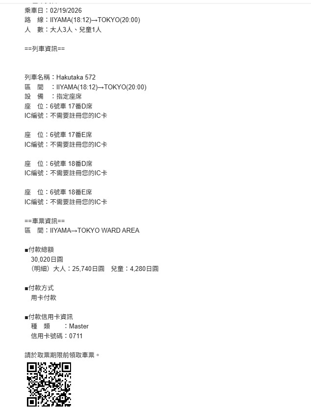
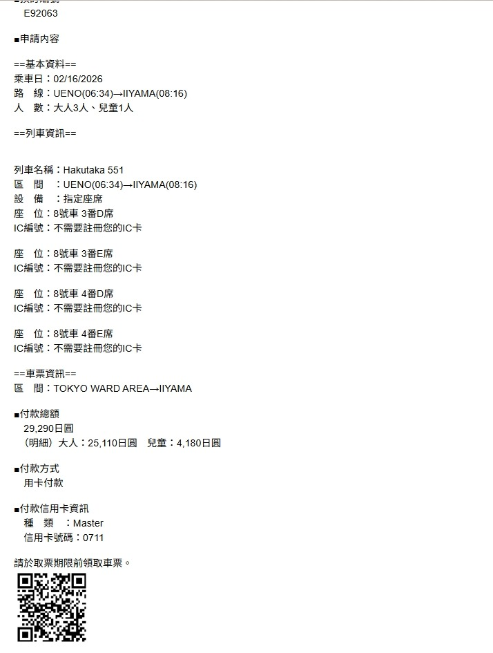

💡 提示：點擊「交通」分頁可查詢 Skyliner 與新幹線班次。
去程機票 (Scoot)
Trip.com
已開票
TR874
Trip.com 訂單
#1616324652894157
14:00
台北 TPE
18:00
東京 NRT
航空公司訂位代號 (PNR)
J77LTF
2/15 (日) |
4人
上野住宿 (1晚)
Booking.com
已確認
Hop Inn Tokyo Ueno
地圖
東京都, 東京, 6 Chome-7-19 Ueno, Taito City
2/15 (日) 15:00
2/16 (一) 11:00
Booking.com 確認碼
PIN: 7650
6373223684
2間客房 (2位成人)
東京八丁堀 (3晚)
e路東瀛
已確認
MIMARU Tokyo Hatchobori
地圖
家庭房 (上下舖) | 4大人
2/19 (四) 1晚
入住15:00 / 退房11:00
參考編號: 1639863574
訂單編號: 6158371200
2/20 (五) 2晚
入住15:00 / 退房11:00
參考編號: 1639846244
訂單編號: 6158362078
野澤溫泉 (3晚)
已確認Haus St. Anton
地圖
野澤溫泉村 日影口區域
2/16 (一)
2/19 (四)
飯店服務
- • 🎿 雪具租借 (住客享7折)
- • 🍽️ 主廚套餐晚餐 (¥10,000/人)
- • ♨️ 私人溫泉 (需預約)
- • 🧺 洗衣/烘乾 (¥1,000)
野澤晚餐預約
已預約JR 新幹線 (去程 野澤)
えきねっと
已購票
Hakutaka 551
訂單編號
E92063
06:34
上野 UENO
08:16
飯山 IIYAMA
座位: 8號車
設備: 指定座席
3番D席・3番E席・4番D席・4番E席
2/16 (一) |
大人3人・兒童1人
¥29,290
顯示取票 QR Code

請於取票期限前領取車票
JR 新幹線 (回程 東京)
えきねっと
已購票
Hakutaka 572
區間
IIYAMA→TOKYO
18:12
飯山 IIYAMA
20:00
東京 TOKYO
座位: 6號車
設備: 指定座席
17番D席・17番E席・18番D席・18番E席
2/19 (四) |
大人3人・兒童1人
¥30,020
顯示取票 QR Code

請於取票期限前領取車票
機場接送 (Klook)
已確認送機服務
訂單: QBE316475
2026/02/22 (日) 09:00
司機將於飯店大廳等候
回程機票 (EVA)
Trip.com
已開票
BR197
Trip.com 訂單
#1616324652894157
14:00
成田 NRT
17:05
台北 TPE
航空公司訂位代號 (PNR)
E6QA4U
2/22 (日) |
4人
1 2/15 抵達日推薦 (成田 & 上野)
搭乘 Skyliner 前往上野 (約19:30-20:00 抵達)
雪 野澤溫泉 美食推薦
旺季請務必預約晚餐！建議提前預訂或17:30前排隊。
🏨 Haus St. Anton 主廚套餐
住客優惠8-10道料理 / 每日更換菜單 / 使用當季食材
¥10,000/人
一般價 ¥13,000
🍶 日式居酒屋
🥩 西式料理
🍖 燒肉 & 亞洲料理
🍜 親子友善
☕ 咖啡廳 & 現代料理
都 八丁堀 & 東京車站周邊
🏨 飯店周邊 (步行5分鐘內)
🍜 東京車站拉麵街 (東京駅一番街 B1)
從八丁堀站搭車約5分鐘。8間名店集結，各有特色！
🍣 壽司 & 海鮮
🥩 肉類 & 咖哩
✨ 最後一晚推薦 (2/21)
銀座
- • 敘々苑 (高級燒肉)
- • 今半 (壽喜燒)
- • 銀座久兵衛 (壽司)
丸之內
- • 新丸ビル 5-7F
- • 丸ビル 35-36F (夜景)
- • KITTE 5-6F
2/21 (六) 淺草 & 銀座
- 09:00 淺草寺：趁早參拜。
- 14:30 銀座：步行者天國。
2/15 機場快線 Skyliner
入國日
班機 18:00 抵達 (TR874)
預抓 1 小時入境，建議搭乘 19:00 後班次。
起點
成田機場 (Narita)
終點
京成上野 (Ueno)
滑雪資訊
💳 纜車票 (White Card)
飯店櫃檯購買可享優惠價
- 購買 White Card (¥300)
- 掃描 QR Code 選擇票種
- 信用卡付款後即可使用